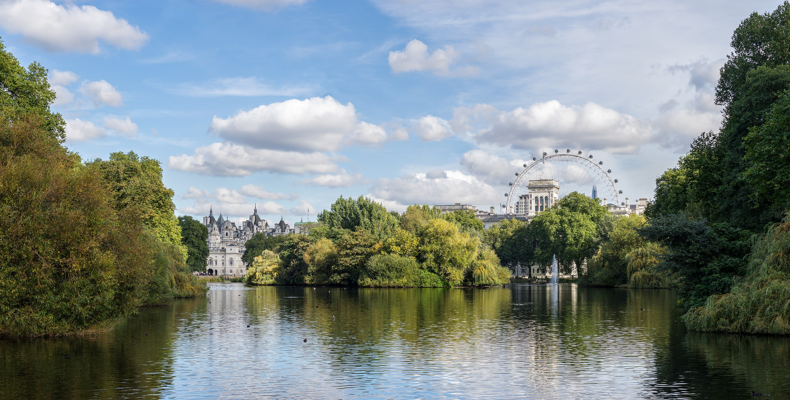
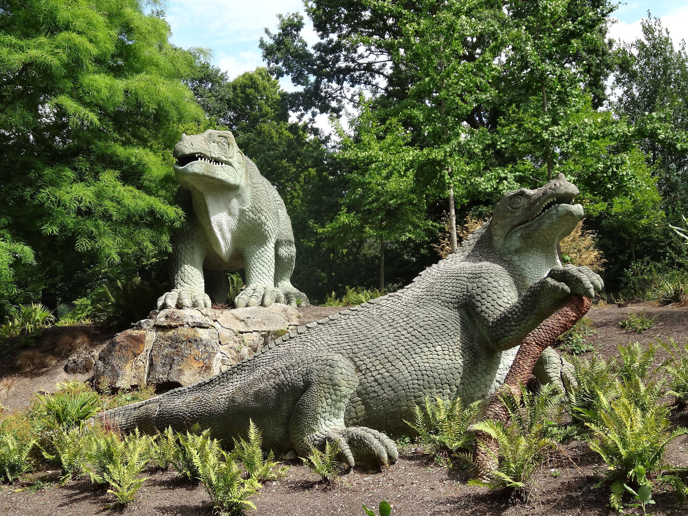
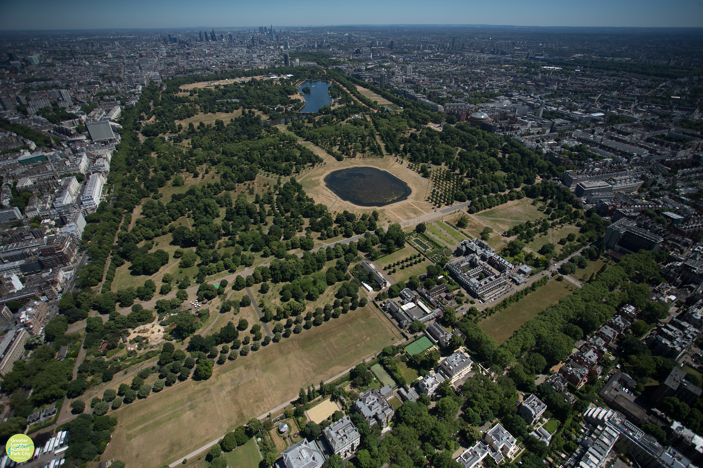
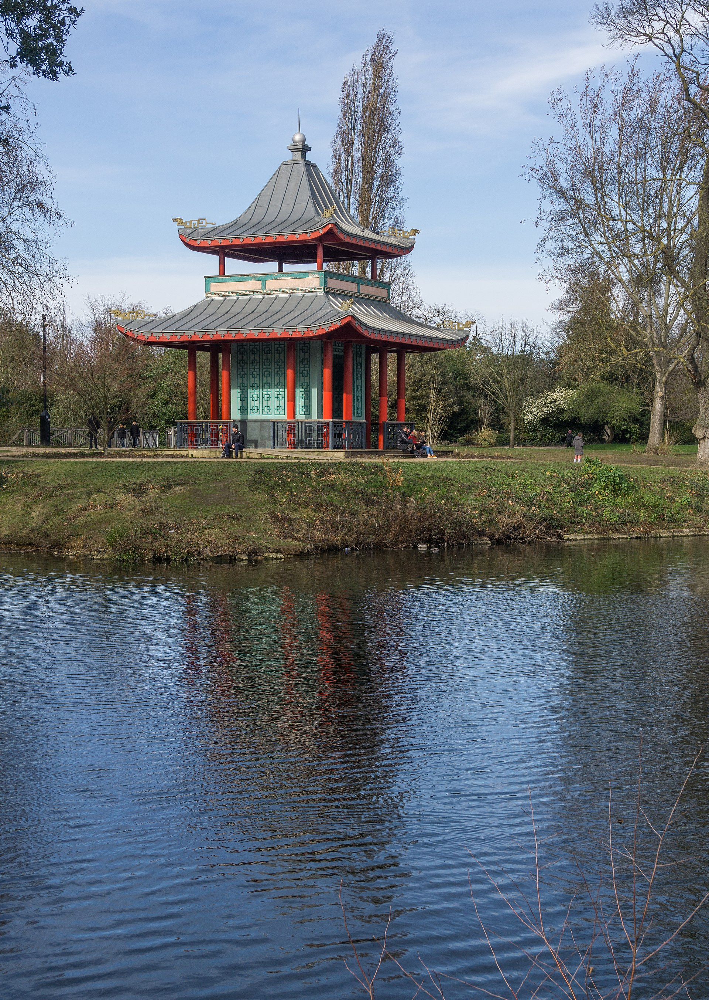
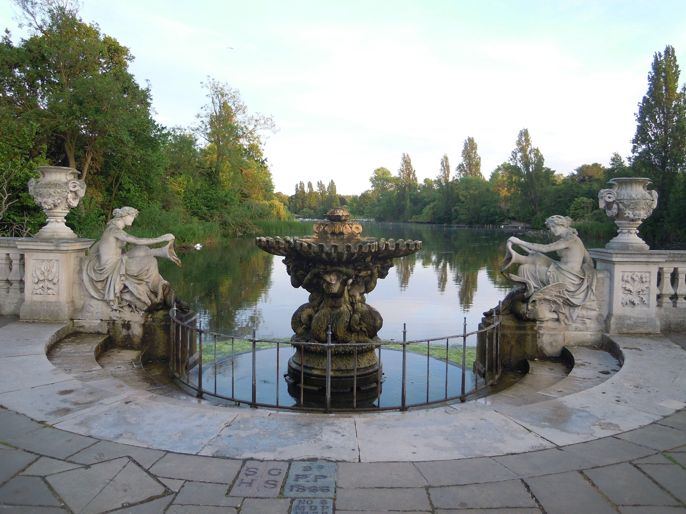

London Parks
Flanked by Buckingham Palace to one side, The Mall, Westminster and Horse Guards Parade to the others, St James’s Park is a peaceful and picturesque green space covering about 23 hectares. It’s hard to believe that you can find somewhere so quiet in between some of London’s most important spots (it’s also right next to 10 Downing Street) – but that’s London for you. The park is particularly loved by bird watchers, as there is a large lake with two islands within it. Around it, there are various birds including pelicans, waterfowl and duck. The sight of the lake, islands and birds certainly makes it a gorgeous sight. If you’re looking for nice parks in London, then James’s Park deserves a spot near the top of your list. 7
Image © User:Colin / Wikimedia Commons, CC BY-SA 3.0, https://commons.wikimedia.org/w/index.php?curid=22960560
Let’s avoid one disappointment early – the Crystal Palace that was this park’s namesake is no more, having been destroyed by a fire in the 30s. Luckily, there’s plenty else to keep you entertained. Of course there’s the striking plants and trees, but there’s also a dilapidated Victorian theme park, and some huge dinosaur statues to hunt out. Crystal Palace Park is also home to disused Victorian Subway – it is only open three times a year as restorative work are undertaken, but it is a beautiful sight. 7
Image © Jes from Melbourne, Australia - don't chop the dinosaurs daddy!, CC BY-SA 2.0, https://commons.wikimedia.org/w/index.php?curid=5158019
Probably the most famous park in London, Hyde Park is also the largest of the four royal parks in central London. It’s no wonder it’s at the top of pretty much every London itinerary. It was first established by Henry VIII in 1536, but it wouldn’t be open to the general public for another century after that (you know how it goes with the royal familio). Today, luckily, all Londoners can enjoy the wide open green space and many events. Some of the famous events in Hyde Park take place on the Speaker’s Corner, where people can present on various topics (some interesting, some decidedly not), as well as open-air rock shows that have attracted the likes of Queen. 7
Image © @LondonNPC #NationalParkCity - https://www.flickr.com/photos/134898965@N04/19967301255/, CC BY 2.0, https://commons.wikimedia.org/w/index.php?curid=104213312
The 19th century Victoria Park is also nickname “the People’s Park”, thanks to the fact that it was one of the first amenities enjoyed by the working class in London. Today, it remains a place where people from all over the city – and further afield – can go to enjoy nature and the public amenities. Spread out over 88 hectares, the park boasts two cafes, a lido (pool) and a cricket pitch. Its also frequently the host of concerts, protests and other events. 7
Image © Sumit Surai - Own work, CC BY-SA 4.0, https://commons.wikimedia.org/w/index.php?curid=77293472
If you are looking for a beautiful park in central London, Kensington Gardens is always a good choice. Having once been the gardens of Kensington Palace (which still sits in the middle of the park looking very pretty), they are pretty special. The gardens cover an area of over 270 acres, and the trails take you past many interesting species of flora and fauna. Although they began life as the westernmost part of Hyde Park, it is now very much a separate park and there is somewhat of a rivalry between the two. Just quietly though, they’re both pretty beautiful. 7
Image © Jack1956 - Own work, CC BY-SA 4.0, https://commons.wikimedia.org/w/index.php?curid=80332438